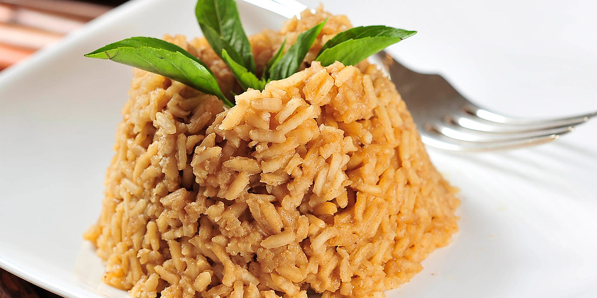

Arroz con coco
Ingredientes:
- 2 tazas de arroz
- 1 coco rallado
- 2 tazas de agua
- 2 cucharadas de azúcar
- Sal al gusto
Preparación:
- Extraer la leche del coco rallado mezclándolo con las 2 tazas de agua y colándolo bien.
- En una olla, cocinar la leche de coco a fuego medio hasta que el líquido se evapore y se forme un residuo espeso y dorado (titoté).
- Agregar el arroz, el azúcar y la sal al gusto, revolviendo bien para que se impregne del sabor del coco.
- Verter 4 tazas de agua (o la cantidad necesaria según el tipo de arroz) y llevar a ebullición.
- Cuando el agua comience a reducirse, bajar el fuego y tapar la olla.
- Cocinar a fuego lento hasta que el arroz esté completamente seco y suelto.
- Retirar del fuego, dejar reposar unos minutos y servir caliente.